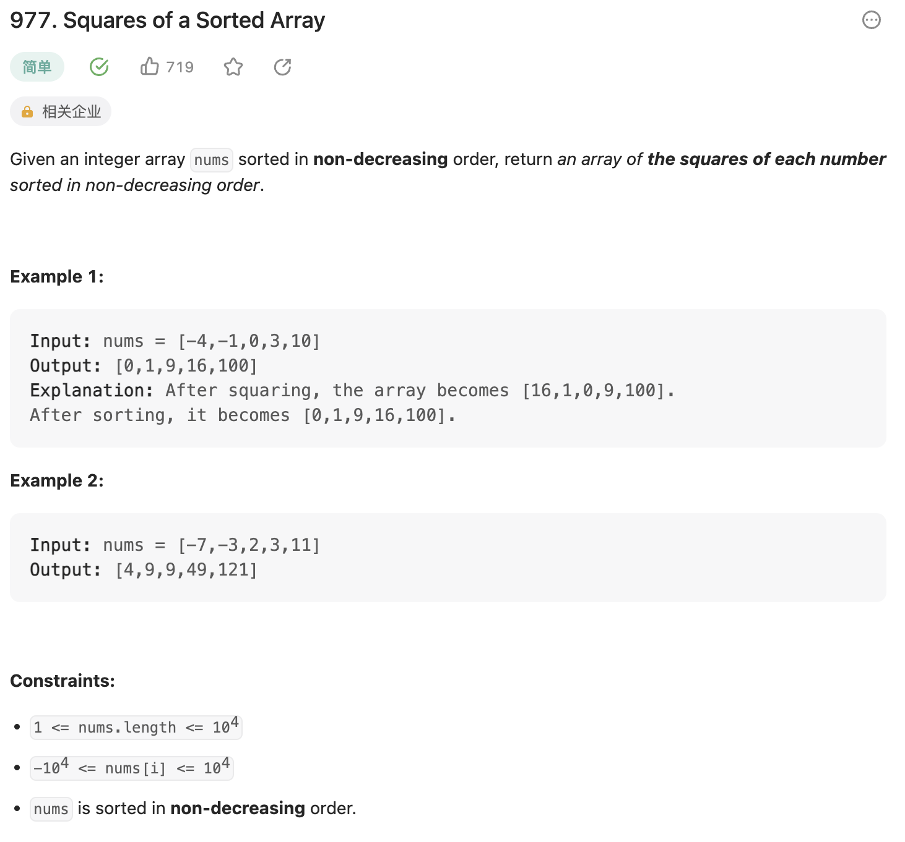
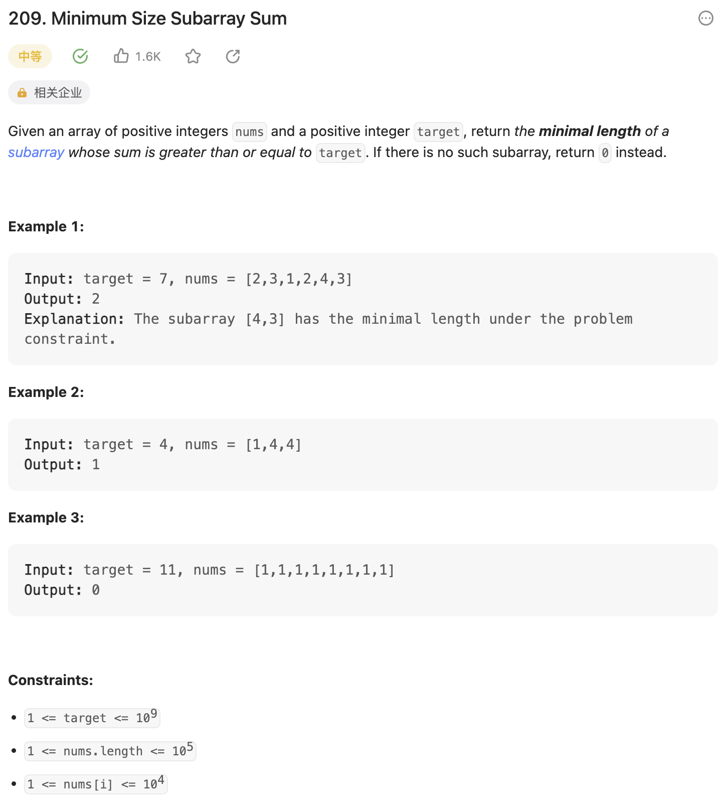
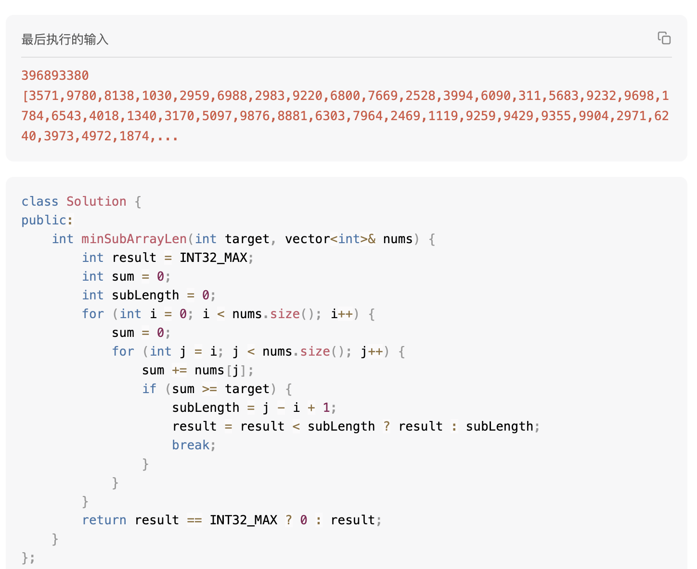
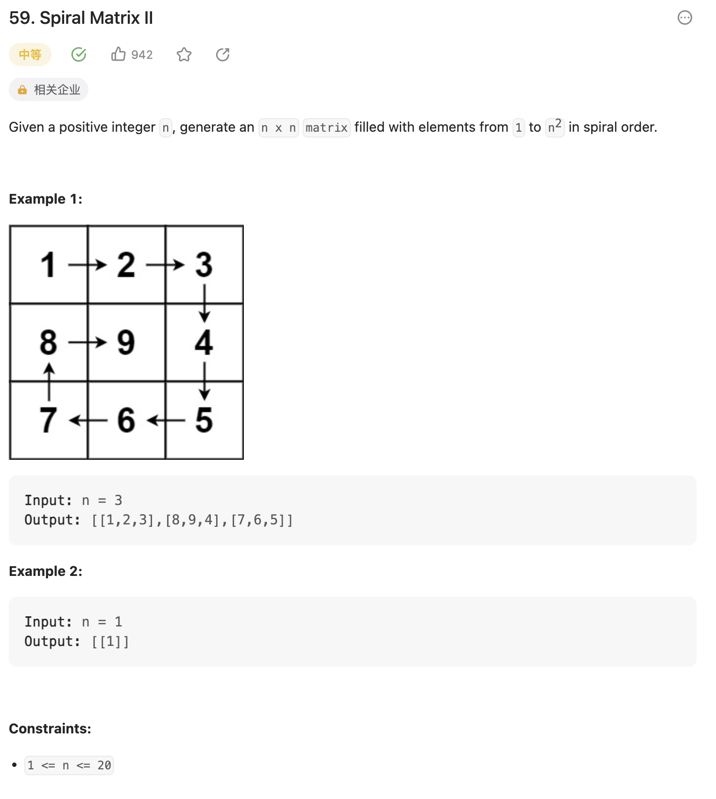

977.有序数组的平方
代码随想录链接
题目

LeetCode-977
给定一个顺序不减的有序数组A，返回一个由A数组中每个值的平方组成的顺序不减数组。
自己的思考
可能还是倾向于暴力法一点，有看到提示说可以用双指针法，但是自己也没想明白应该怎么用(我好蔡啊.jpg)
解法一
暴力法，先就原地计算出来每一项的平方是多少，覆盖到原位置，然后再排个序。
1
2
3
4
5
6
7
8
9
10
11
| #include<algorithm>
class Solution {
public:
vector<int> sortedSquares(vector<int>& nums) {
for (int i = 0; i < nums.size(); i++) {
nums[i] *= nums[i];
}
sort(nums.begin(), nums.end());
return nums;
}
};
|
一个for循环遍历数组，时间复杂度为\(O(n)\)，C++的sort函数是基于快速排序的优化算法，时间复杂度为\(O(nlogn)\)。
使用了常数个变量，空间复杂度为\(O(1)\)。
解法二
双指针法，类似于昨天的题目，使用两个指针来完成。
为什么可以使用双指针法呢？要题目给定的条件出发。
题目给定的数组是顺序不减进行排列的，求得平方值值后需要调整位置的情况，只存在于原数组左侧的负数，平方之后应该被排在右侧的某个位置，而原数组和结果数组的右侧都是较大的值。由这个条件，我们可以使用双指针法，对比两个指针指向的值的平方，较大的值，应该依次从右至左写入到结果数组内。
1
2
3
4
5
6
7
8
9
10
11
12
13
14
15
16
17
| #include<algorithm>
#include<cmath>
class Solution {
public:
vector<int> sortedSquares(vector<int>& nums) {
vector<int> result(nums.size(), 0);
int leftIndex = 0, rightIndex = nums.size() - 1, resultIndex = nums.size() - 1;
while(leftIndex <= rightIndex) {
if (pow(nums[leftIndex], 2) > pow(nums[rightIndex], 2)) {
result[resultIndex--] = pow(nums[leftIndex++], 2);
} else {
result[resultIndex--] = pow(nums[rightIndex--], 2);
}
}
return result;
}
};
|
算法中while的循环次数和数组的大小线性相关，时间复杂度为\(O(n)\)。
由于使用了一个新的且和原数组大小一致的数组，空间复杂度为\(O(n)\)。
209.长度最小的子数组
代码随想录链接
题目

LeetCode-209
自己的思考
暴力法（蔡啊）
失败案例
使用两个for循环，计算并对比从第一个for循环的索引指向的数开始的每个子序列是否符合条件，若符合条件，记录下最短值。
1
2
3
4
5
6
7
8
9
10
11
12
13
14
15
16
17
18
19
20
| class Solution {
public:
int minSubArrayLen(int target, vector<int>& nums) {
int result = INT32_MAX;
int sum = 0;
int subLength = 0;
for (int i = 0; i < nums.size(); i++) {
sum = 0;
for (int j = i; j < nums.size(); j++) {
sum += nums[j];
if (sum >= target) {
subLength = j - i + 1;
result = result < subLength ? result : subLength;
break;
}
}
}
return result == INT32_MAX ? 0 : result;
}
};
|
很不幸，由于这个写法的时间复杂度为\(O(n^2)\)，没有AC，超时了

LeetCode-209-寄
正确解法
滑动窗口法
什么是滑动窗口呢，这里给出一个百科链接，讲述的是TCP协议中的滑动窗口。
下面我用自己的语言描述一下滑动窗口。所谓滑动窗口，是指在序列中取一段子序列，其前后边界是可以随时按照情况进行灵活调整的。
但如果仍然使用上面的两个for循环来表示起始和终止位置的话，那和“灵活”两个字怕是要说再见了。
可以仅适用一个for循环来表示后指针，在循环内，对左指针进行调整。这里偷一个代码随想录网站上的动图，来更好地说明滑动窗口。
 滑动窗口动图示意，图来自代码随想录
滑动窗口动图示意，图来自代码随想录
1
2
3
4
5
6
7
8
9
10
11
12
13
14
15
16
17
18
| class Solution {
public:
int minSubArrayLen(int target, vector<int>& nums) {
int result = INT32_MAX;
int sum = 0;
int subLength = 0;
int leftIndex = 0;
for (int rightIndex = 0; rightIndex < nums.size(); rightIndex++) {
sum += nums[rightIndex];
while (sum >= target) {
subLength = rightIndex - leftIndex + 1;
result = result < subLength ? result : subLength;
sum -= nums[leftIndex++];
}
}
return result == INT32_MAX ? 0 : result;
}
};
|
这个解法使用了一个for循环来遍历数组，for循环内又有一个while循环，所以时间复杂度是\(O(b^2)\)，但是while循环执行一次，左指针就会向右移动一次，而左指针移动的次数是和数组的长度是线性相关的，所以整个过程中while循环的执行次数是\(O(n)\)，与for循环的次数无关。
故该解法的时间复杂度为\(O(2 * n) =
O(n)\)。
使用了常数个变量，空间复杂度为\(O(1)\)。
59.螺旋矩阵II
代码随想录链接
题目

LeetCode-59
给定一个正整数n，以顺时针方向螺旋填充\(n *
n\)的一个矩阵
自己的思考
这题本科的时候绝对做过。需要设定一些控制变量，用于记录当前填充的坐标，但是怎么设置控制变量，是非常关键的地方，然后想不出来了
解法
在设计控制变量的时候，要考虑好在什么条件下，需要按照上右下左四个边的顺序进行进行下一个边的填充。
还要考虑到填充的时候，边与边的重叠部分，应该怎么处理，比如：
当然甚至还可以： + 两个边都填写，然后再调整要填写的数字
这里选择由下一个边填写的方法，原因是在完成一个loop之后，下一个loop开始的位置比较容易计算。
1
2
3
4
5
6
7
8
9
10
11
12
13
14
15
16
17
18
19
20
21
22
23
24
25
26
27
28
29
| class Solution {
public:
vector<vector<int>> generateMatrix(int n) {
vector<vector<int>> result(n, vector<int>(n, 0));
int startx = 0, starty = 0;
int offset = 1;
int loop = n / 2;
int mid = n / 2;
int count = 1;
int i, j;
while (loop--) {
i = startx;
j = starty;
for (j = starty; j < n - offset; j++) result[i][j] = count++;
for (i = startx; i < n - offset; i++) result[i][j] = count++;
for (; j > starty; j--) result[i][j] = count++;
for (; i > startx; i--) result[i][j] = count++;
startx++;
starty++;
offset++;
}
if (n % 2) result[mid][mid] = count;
return result;
}
};
|
代码时间复杂度为\(O(n^2)\)，空间复杂度为\(O(n^2)\)。
数组总结
在这个数组的专题内，学习到的方法主要有
二分法
用于查找，主要思想是在有序的数组里，通过左边界和有边界计算出来区间中间位置，根据中间位置的数据与目标数据的大小关系来调整下一次寻找的左右区间。
关键的一点是坚持自己刚开始设定的对于区间的定义（是左闭右开、左开右闭亦或是左闭右闭），并贯穿到所写题目的整个代码当中。
时间复杂度为\(O(logn)\)
例题：LeetCode-704
二分查找
双指针法
顾名思义，使用两个指针在一个for循环下，完成两个for循环的工作，使得时间复杂度降低。
双指针法既可以是同时从一个方向起步，例如LeetCode-27；也可以是分别从数组的开始和末尾向中间靠拢，例如LeetCode-977
双指针法还经常在链表中使用。
滑动窗口
滑动窗口可以用于求一个数组中子序列之用，相比于暴力法显著地降低了时间复杂度。
要理解滑动窗口，关键之处就在于理解窗口的起始位置和结束位置是怎么调整的。例题：LeetCode-209
本文上面的部分有滑动窗口的示意图。
模拟行为
例如模拟螺旋填充矩阵。这类题目主要考察对于代码循环边界控制的能力。要做好这类题目，关键是需要坚持好边界上的处理方法，从一而终。